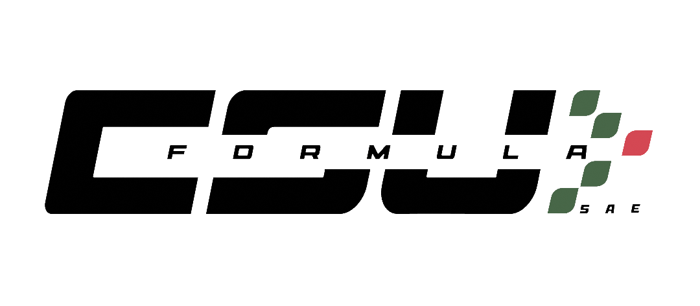
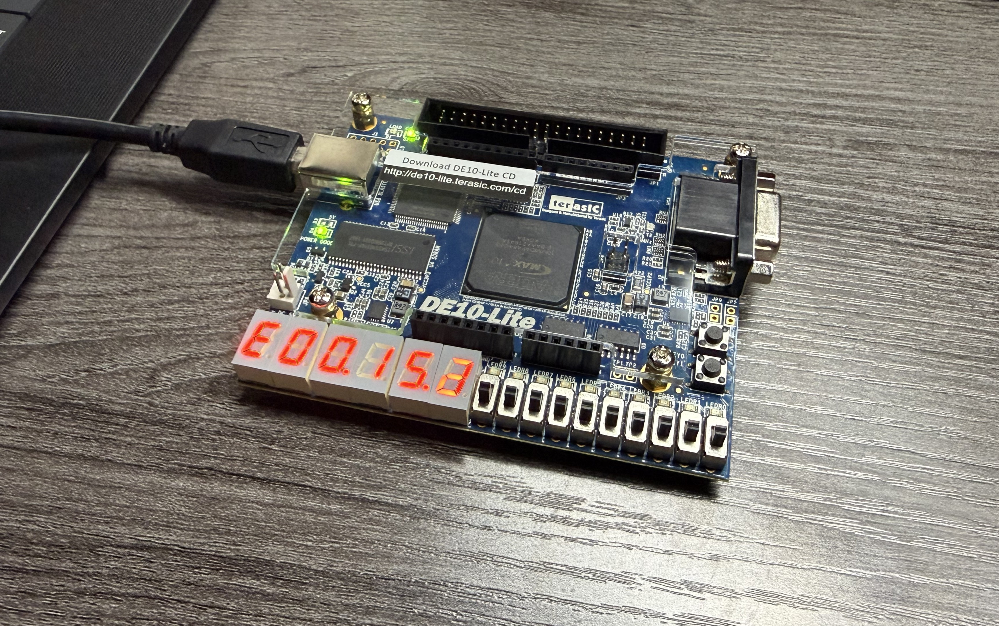
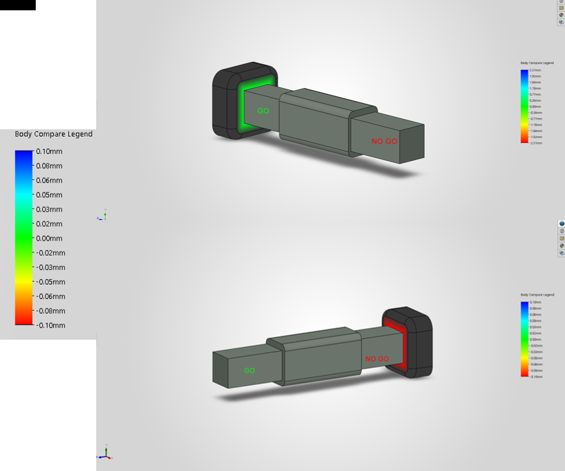
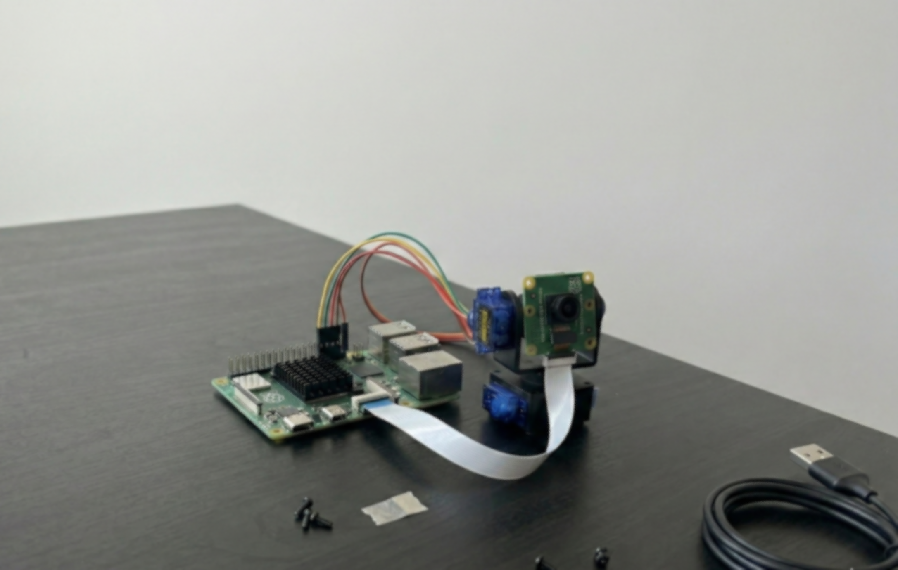

Cleveland State University Computer Engineering Student
Bilingual (English/Romanian) • Dual Citizen (USA/RO) • Class of 2027
Highly motivated Computer Engineering student with a strong foundation in circuit design (OrCAD PSpice, LTspice), 3D designs (SOLIDWORKS), and programming (C++, Java). Combining academic knowledge with hands-on experience in repairing electronic and mechanical systems, completing large and complex projects, and excels in high-pressure environments. Seeking to grow, learn and contribute to the success of dynamic engineering team.
As a dual citizen, I am authorized to work in both the US and the EU, and I am actively seeking Summer 2026 internships.

Member of the university racing team focused on designing and building an electric formula-style race car. Collaborated on electrical subsystems and performance testing.

Designed an Arithmetic Logic Unit on a DE10-Lite Intel FPGA board.The scope of the ALU is to perform arithmetic and logical operation, which is one of the fundamental building blocks of the CPU of a computer.

Designed a precision inspection tool for manufacturing quality control using SOLIDWORKS. Created 3D models to verify tolerance specifications.

Designed and trained an AI object-tracking camera by creating a custom camera mount in SOLIDWORKS and developing a program that uses MediaPipe AI to visually detect objects on a Raspberry Pi 5.